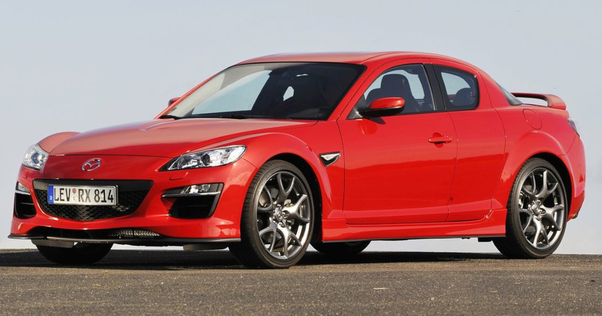
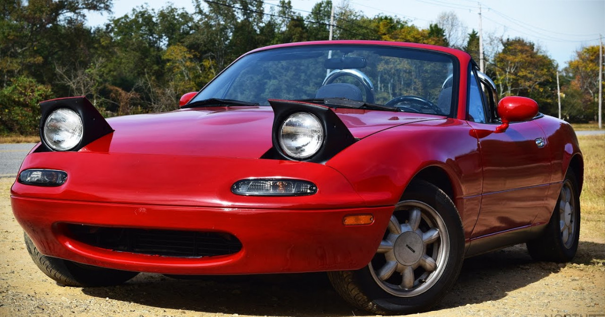
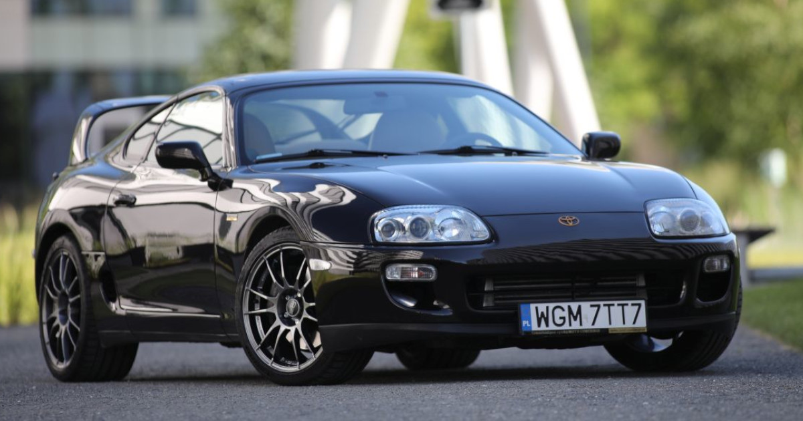

Mazda
 RX-7 III
RX-7 III
Wyposarzona w silnik obrotowy o pojemności 1.3l cechujący się małą ilością części ruchomych i dużą mocą przy niskiej pojemności. Znana głównie 3 generacja z łatwości tuningowania.
RX-7 IIIWyposarzona w silnik obrotowy o pojemności 1.3l cechujący się małą ilością części ruchomych i dużą mocą przy niskiej pojemności. Znana głównie 3 generacja z łatwości tuningowania.

RX-8
Podobnie jak jej poprzedniczka - Mazda RX-7 - Mazda RX-8 wyposarzona jest w silnik wanka. Silnik kręci się do aż 9 tys. obrotów na min. Samochód jest wyposarzony w nowsze systemy.
Podobnie jak jej poprzedniczka - Mazda RX-7 - Mazda RX-8 wyposarzona jest w silnik wanka. Silnik kręci się do aż 9 tys. obrotów na min. Samochód jest wyposarzony w nowsze systemy.

MX-5 NA
Samochód typu roadster wyposarzony w 4 cylindrowy silnik o pojemności 1.6l oraz później również 1.8l. Łączył cechy roadsteru i samochodu na codzień dzięki czemu była dającym się roadsterem na świecie.
Samochód typu roadster wyposarzony w 4 cylindrowy silnik o pojemności 1.6l oraz później również 1.8l. Łączył cechy roadsteru i samochodu na codzień dzięki czemu była dającym się roadsterem na świecie.
Toyota

Supra Mk4
Wyposarzana była w silniki 2JZ oraz R6 mające pojemność 3.0l o mocy 220 KM, 280 KM lub 330 KM. Supry były jednak bardzo często modyfikowane przez ich posiadaczy i różniły się od fabrycznych parametrów.
Wyposarzana była w silniki 2JZ oraz R6 mające pojemność 3.0l o mocy 220 KM, 280 KM lub 330 KM. Supry były jednak bardzo często modyfikowane przez ich posiadaczy i różniły się od fabrycznych parametrów.
Chevrolet
 Camaro VI ZL1
Camaro VI ZL1
DO ZROBIENIA KOLEJNE SAMOCHODY
Camaro VI ZL1DO ZROBIENIA KOLEJNE SAMOCHODY